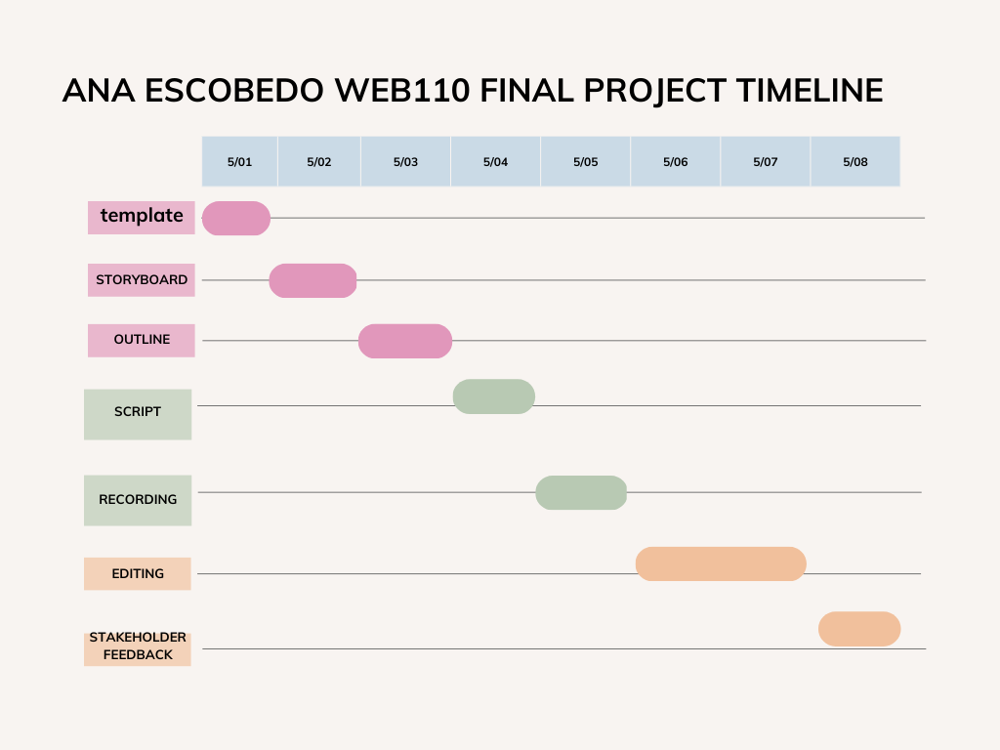

For my final project in WEB 110, I will present my knowledge about HTML, CSS, Javascript, SQL, and presenting a Gantt chart! Through this project, I aim to further my presentational skills as well as demonstrate my ability to identify issies, debug, and write proper code. Learning the appropriate techniques required to build websites is my ultimate goal.
The article "Project Management" taught me how to meet business goals and deadlines. The primary qualities necessary to complete a project are scope, time, budget, and quality. Monitoring and controlling a project is important so that any potential risks can be asses and resolved, and it can include project scope, schedule, cost, addressing potential hazards and monitoring changes to a project. Gantt charts can be helpful in managing deadlines for a project. These key points will be helpful to remember in my future when I am a web developer so that I can properly execute project needs and meet deadlines.